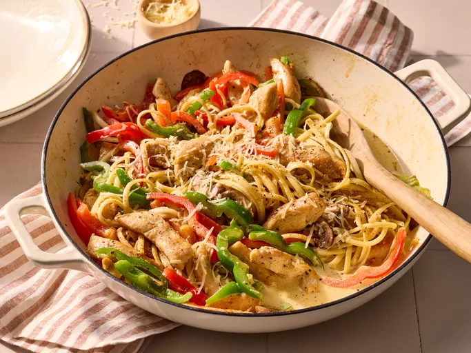

Cajun Chicken Pasta
Home

Description
A creamy Cajun chicken pasta filled with bell peppers and mushrooms.
This recipe is packed with spicy flavor!
Ingredients
- 4 ouncees linguine or other pasta
- 2 skinless, boneless chicken breast halves
- 2 teaspoons Cajun seasoning
- 2 tablespoons butter
- 1 red bell pepper,sliced
- 1 green bell pepper,sliced
- 4 fresh mushrooms,sliced
- 1 green onion,chopped
- 1 cup heavy cream
- One quarter teaspoon dried basil
- One quarter teaspoon lemon pepper
- One quarter teaspoon salt
- One eigth teaspoon garlic powder
- One eigth teaspoon ground black pepper
- One quarter cup grated Parmesan cheese
Steps
- Gather the ingredients
- Boil a large pot of lightly salted water. Add your pasta and cook until al dente.
This should take 8 to 10 minutes. Drain water.
- Cut your chicken breast into strips and place them into a plastic zipper bag.
Add Cajun seasoning and shake to coat the chicken.
- In a large skilled melt butter over medium heat. Add your chicken and cook until browned
while stirring. After 5 to 7 minutes ensure the chicken is cooked throughly.
- Add bell peppers, mushrooms and green onion. Cook and stir them for 2 to 3 minutes.
- Reduce the heat and stir in cream,basil,lemon pepper,salt,garlic powder,and black pepper.
Add cooked pasta, while stirring everything together.
- Springle Parmesan cheese
- Serve and enjoy!